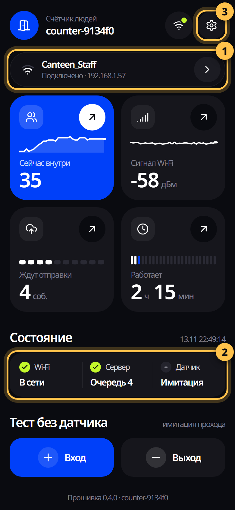
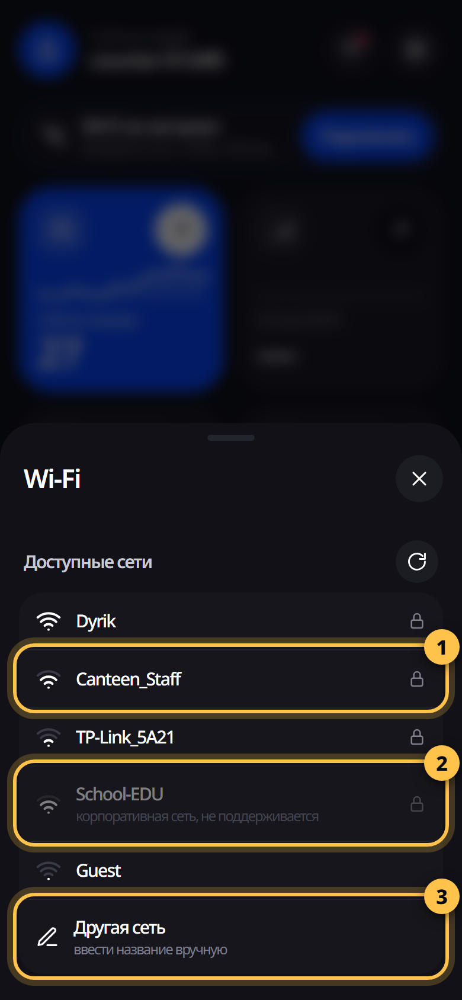
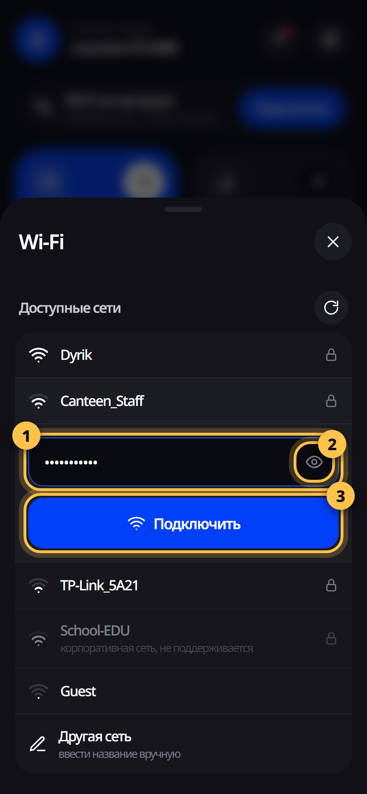
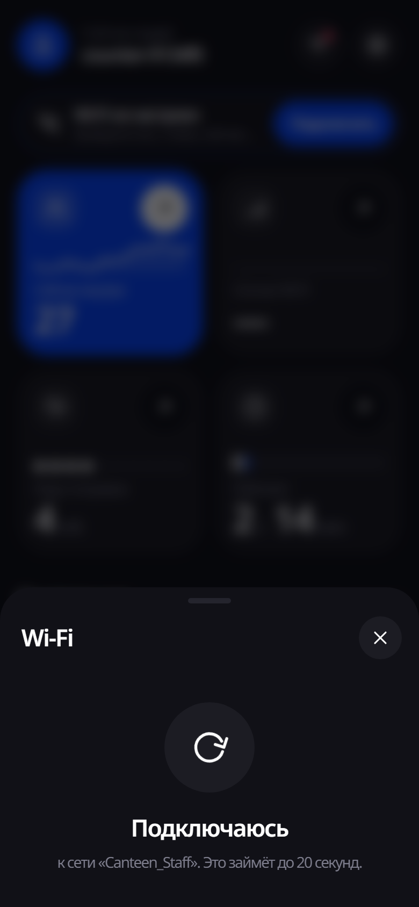
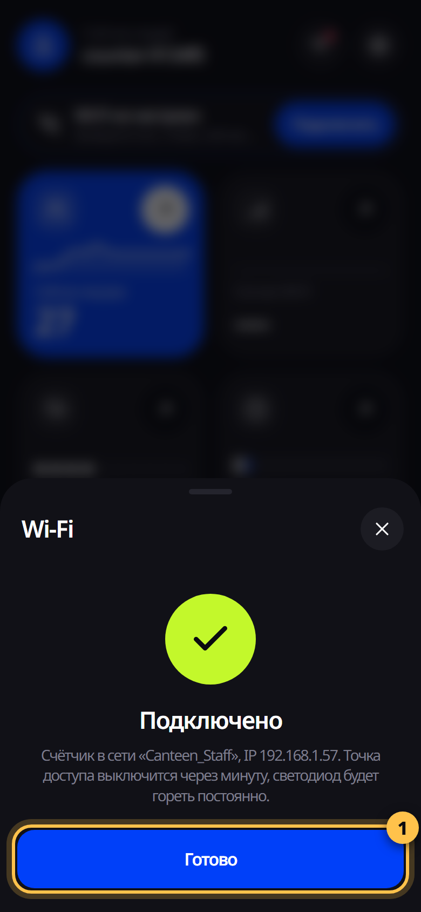
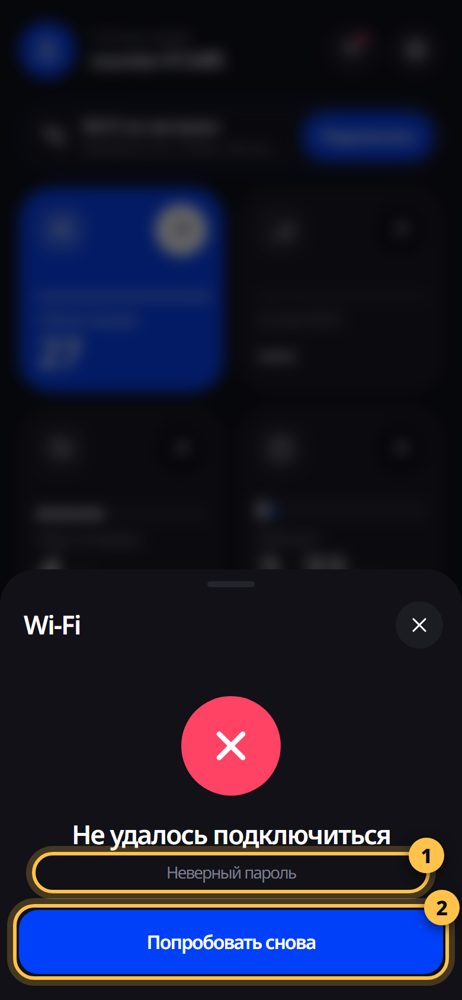
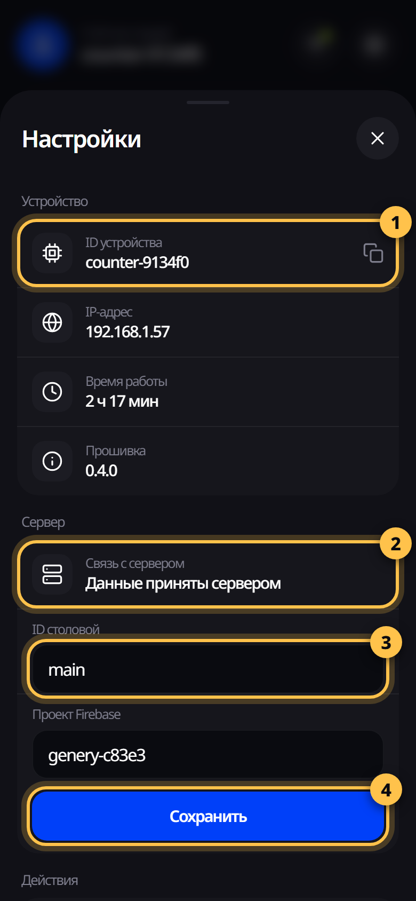
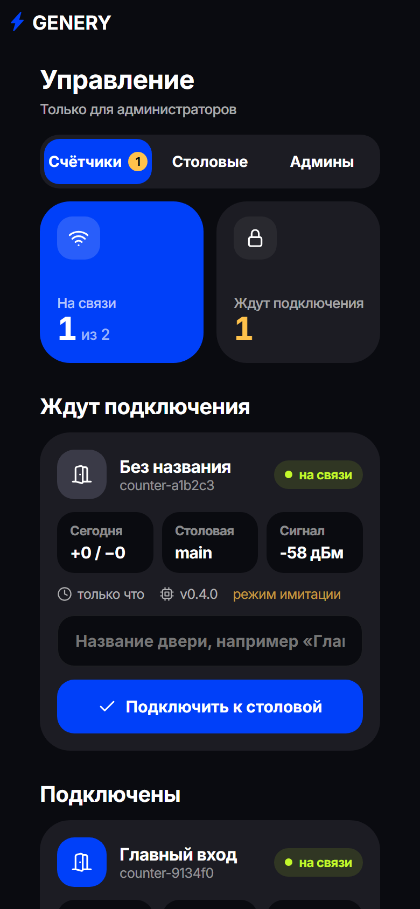
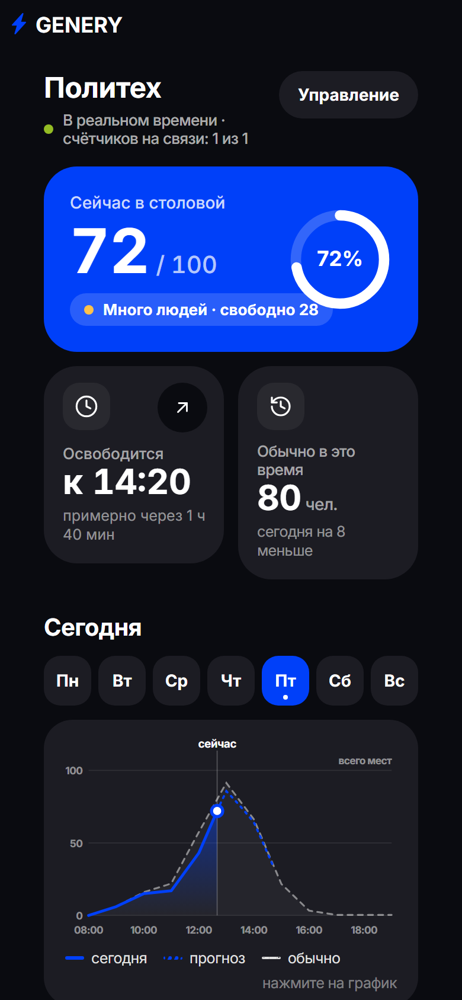

Как подключить плату счётчика к Wi‑Fi столовой и проверить, что данные уходят на сайт Genery. Займёт около 10 минут, ноутбук не нужен — только телефон.

| Светодиод | Что это значит | Что делать |
|---|---|---|
| Медленно мигает | Плата ждёт настройки Wi‑Fi | Пройдите шаги 2–5 |
| Часто мигает | Подключается к сети | Подождите до минуты |
| Горит постоянно | Всё работает | Ничего, можно уходить |
Подключите плату USB‑кабелем к зарядке и вставьте зарядку в розетку. Через несколько секунд синий светодиод начнёт медленно мигать — плата ждёт настройки.
Откройте на телефоне Настройки → Wi‑Fi.
Через несколько секунд телефон покажет окно входа в сеть — это и есть страница платы.
Если не открылась: откройте браузер и наберите адрес 192.168.4.1
Окно Wi‑Fi со списком сетей откроется автоматически.
Кнопка со стрелкой по кругу вверху списка — обновить список сетей.


Под выбранной сетью появится поле для пароля.

Просто подождите — до 20 секунд.

Через минуту сеть Counter-XXXXXX исчезнет, а светодиод будет гореть постоянно.

| Неверный пароль | Проверьте пароль значком глаза: регистр букв, похожие символы (0 и O, l и I). |
| Сеть не найдена | Плата слишком далеко от роутера или роутер работает только на 5 ГГц. Плате нужна сеть 2,4 ГГц. |
| Роутер не отвечает | Перезагрузите роутер или попробуйте ещё раз ближе к нему. |
| Сеть столовой с логином | Корпоративные сети (вход по логину и паролю) не поддерживаются. Нужна отдельная сеть с обычным паролем. |
Подключите телефон обратно к Wi‑Fi столовой и откройте в браузере панель платы:
counter-xxxxxx.local
вместо xxxxxx — буквы и цифры из названия сети платы, маленькими буквами. Если адрес не открывается (бывает на Android) — используйте IP‑адрес платы из списка устройств роутера.
Нажмите шестерёнку вверху справа — откроются Настройки.
Поле «Проект Firebase» не меняйте.

| Сменить сеть Wi‑Fi | Открывает список сетей, как на шаге 3. |
| Отправить данные сейчас | Отправляет данные на сайт сразу, не дожидаясь очереди. Удобно для проверки. |
| Обнулить счётчик | Ставит «внутри» в 0 на плате и на сайте. Обычно не нужно — счёт и так начинается заново каждую ночь. |
| Перезагрузить | Перезапускает плату. Настройки сохраняются. |
| Забыть Wi‑Fi | Стирает сеть и открывает режим настройки (то же, что BOOT 5 секунд). |

Отправьте администратору ID устройства (например, counter-9134f0) и где стоит плата — например, «главный вход».

После подключения посетители видят на сайте, сколько людей в столовой, когда станет свободнее и график загрузки.
| Ситуация | Что делать |
|---|---|
| Нет сети Counter-XXXXXX | Посмотрите на светодиод. Мигает часто — плата ещё ищет старую сеть, подождите минуту. Горит постоянно — плата уже подключена; чтобы настроить заново, удерживайте BOOT 5 секунд. Не горит — проверьте зарядку и кабель. |
| Страница настройки не открылась | Откройте браузер и наберите 192.168.4.1. Отключите на время мобильный интернет, если телефон упорно переключается на него. |
| Сменили пароль Wi‑Fi или роутер | Ничего нажимать не нужно: через минуту после включения плата сама откроет сеть Counter-XXXXXX. Пройдите шаги 2–5. |
| Плату перенесли в другую столовую | Настройте Wi‑Fi нового места (шаги 2–5), затем в настройках смените ID столовой (шаг 7) и сообщите администратору. |
| «Сервер: ошибка» | Откройте настройки → «Связь с сервером». «Нет Wi‑Fi» — проблема с сетью. Другая ошибка — отправьте снимок экрана администратору. |
| На сайте не те цифры | Счёт за день начинается заново каждую ночь. Если нужно сбросить сейчас: Настройки → «Обнулить счётчик» (обнулится и на сайте). |
| Плата «зависла» | Нажмите кнопку EN или отключите и снова включите питание. Настройки и данные сохранятся. |
Если Wi‑Fi пропал, плата копит проходы в памяти (даже при отключении питания) и отправит их, когда связь вернётся.
Удерживайте BOOT 5 секунд или в настройках платы нажмите «Забыть Wi‑Fi». Счётчик и ID столовой при этом сохраняются.
Wi‑Fi должен ловить уверенно: в панели «Сигнал Wi‑Fi» лучше всего значения от −40 до −70 дБм. Хуже −80 — переставьте плату или роутер.
Раздел появится вместе с прошивкой для датчика: высота, направление и калибровка.